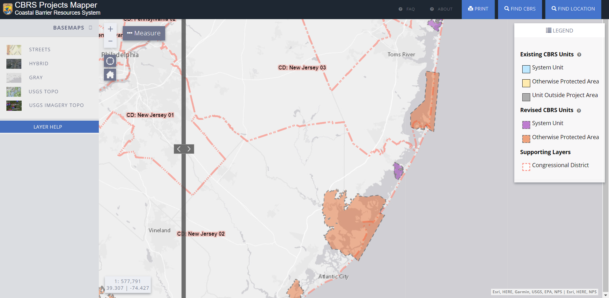
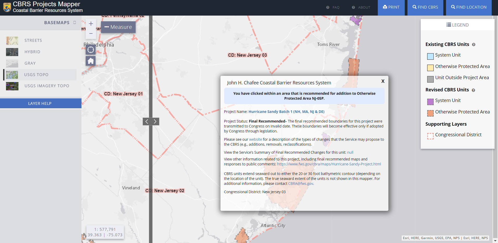
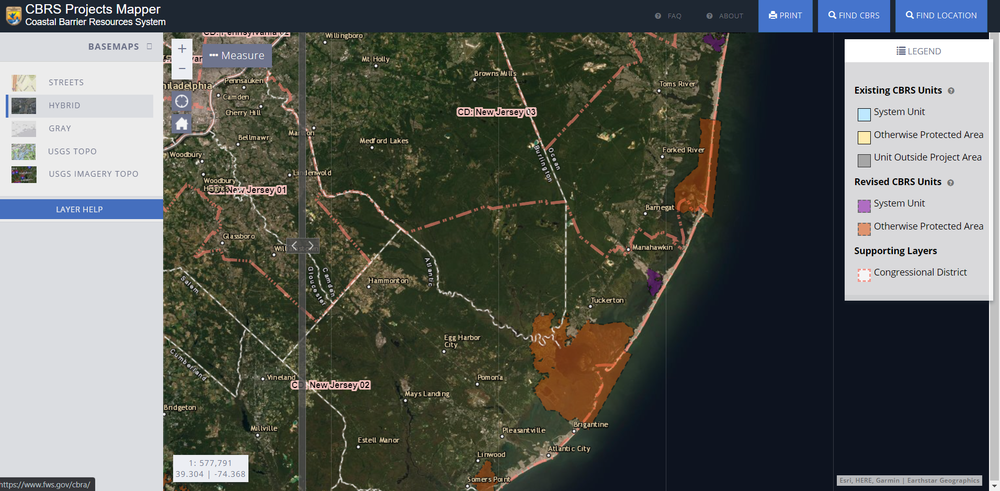
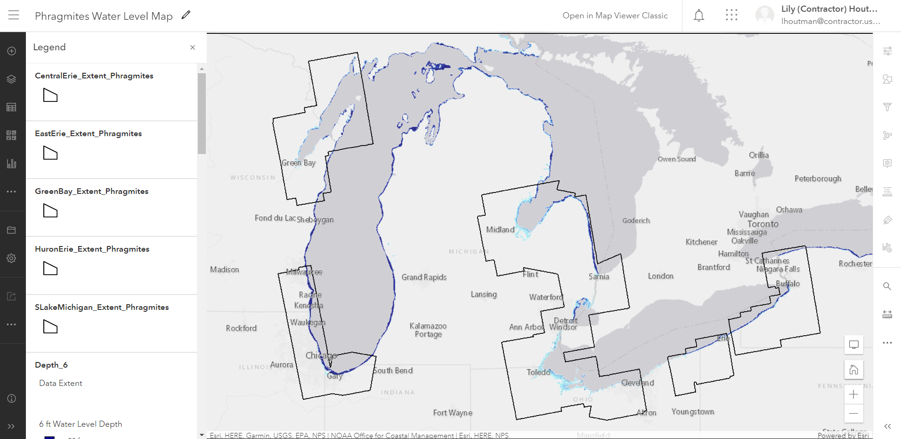
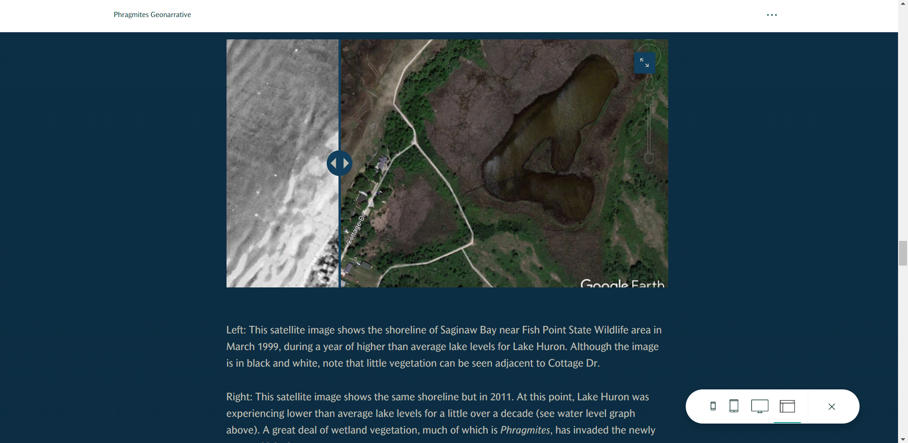
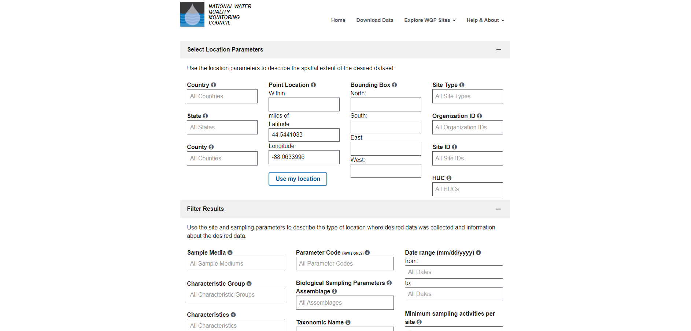
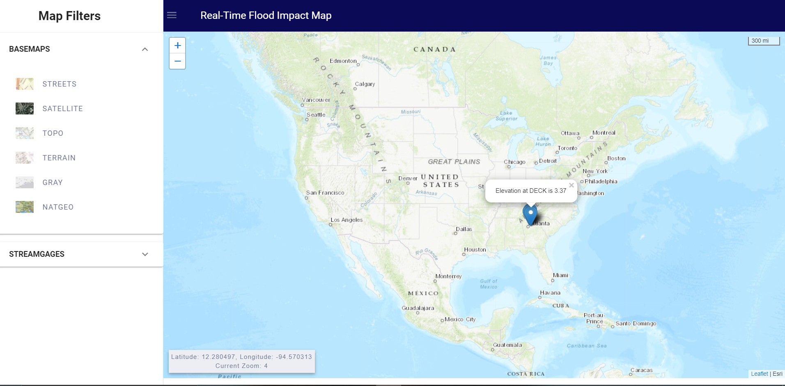
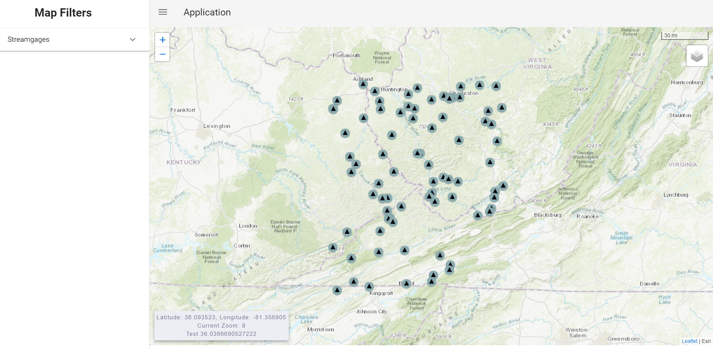

Development Work for the USGS Web Mapping and Informatics Team (WIM)
Much of my work for the USGS is in development and not yet deployed during the summer of 2021. I am sharing limited screenshots of this work as examples of my skills in web development.
The Coastal Barrier Resource System Mapper is a tool that was almost complete when I began working on it. However, because environmental issues are often relevant at the Congressional District level, I added a Congressional Districts layer using JavaScript, ArcGIS API for JS, and AGOL.
I edited the modal to dynamically update as users click on the map, or to let them know if the area they clicked is outside of any congressional district.
Most importantly, I styled the layer to be colorblind friendly in comparsion to the other layers already on the map, and to remain visible with a variety of basemaps.
I am also a member of a science communication project on the invasive species Phragmites. I converted raster imagery to vector polygons in ArcGIS Pro to add to an interactive water level map using AGOL.
I am currently working on developing a geonarrative using ESRI StoryMaps, which includes images and the interactive water level map.
Not all of my work is in cartography. I am restructing a Water Quality Portal form that allows users to access water quality data. In this project, I am using HTML, CSS, SCSS, and JavaScript. I also converted the text-heavy pages of the portal from HTML to Markdown, allowing non-developer staff members to edit the content easier.
I implemented tooltips in the form, revising the formerly text-heavy tooltips. I visually accented the most important text to draw the readers' attention, providing them with the most assistance.

I also conducted user tests to improve the UI/UX design of the form, which is now in the final stages of development.

The WIM team is always looking to innovate, so I worked with my mentor to setup a template project using the frontend framework Vue. I taught myself how to integrate Vue with Leaflet and setup a template for my colleagues to use.
I added basic data to the map using custom icons from the WIM team. This completed my setup for this project, which has now been passed to another intern.
